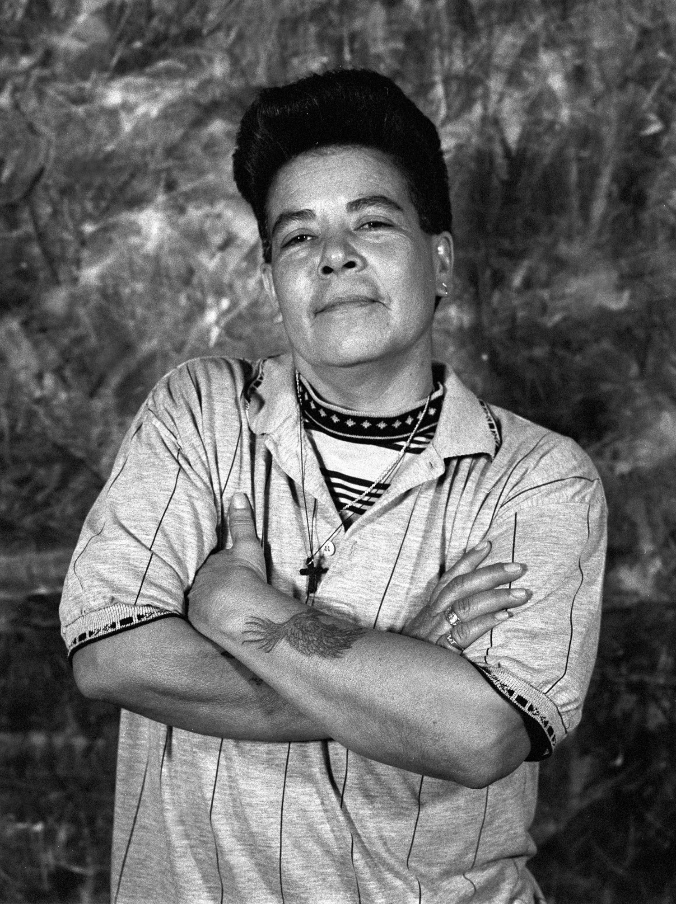
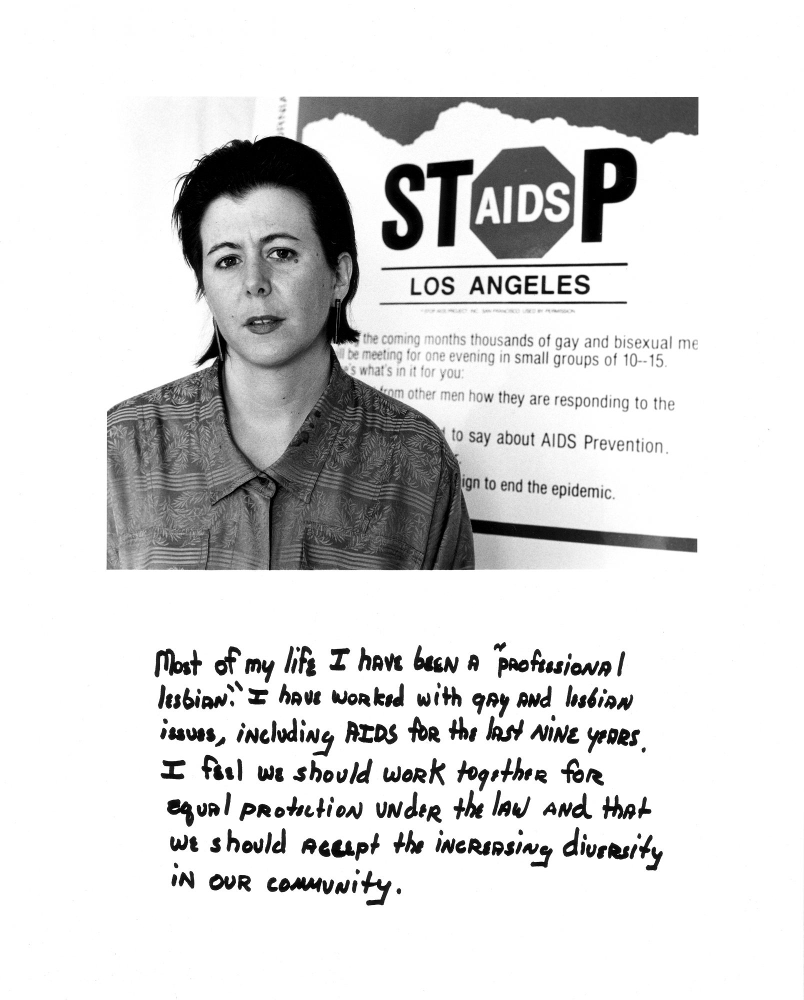
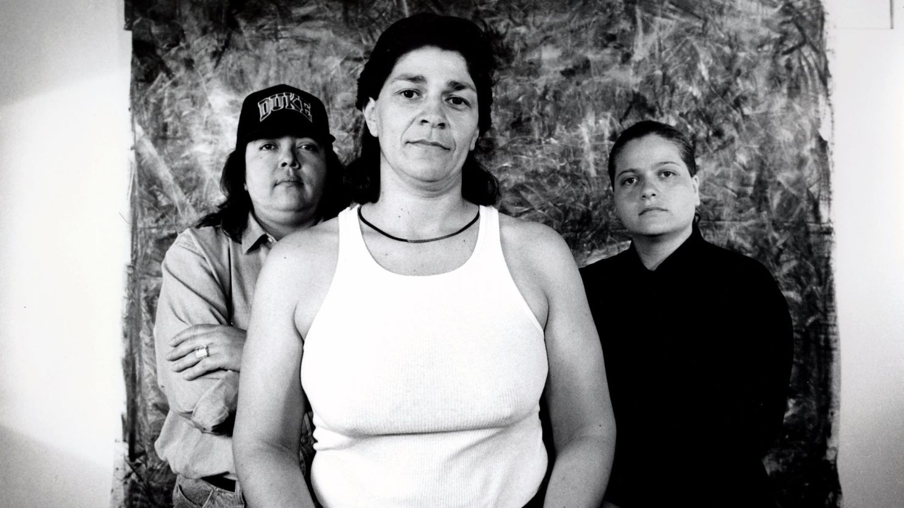

Laura Aguilar’s “Plush Pony #2,” 1992, gelatin silver print, 11 inches by 14 inches. (Laura Aguilar / UCLA Chicano Studies Research Center).
Laura Aguilar, Plush Pony #13, 1992. Gelatin silver prints,
14 × 11 in. (35.6 × 27.9 cm). Courtesy of Laura Aguilar.
Laura Aguilar, Judy, 1990. From the Latina Lesbians series, 1985–91. Gelatin silver print, 14 x 11 in. (35.6 x 27.9 cm). Courtesy of Laura Aguilar.